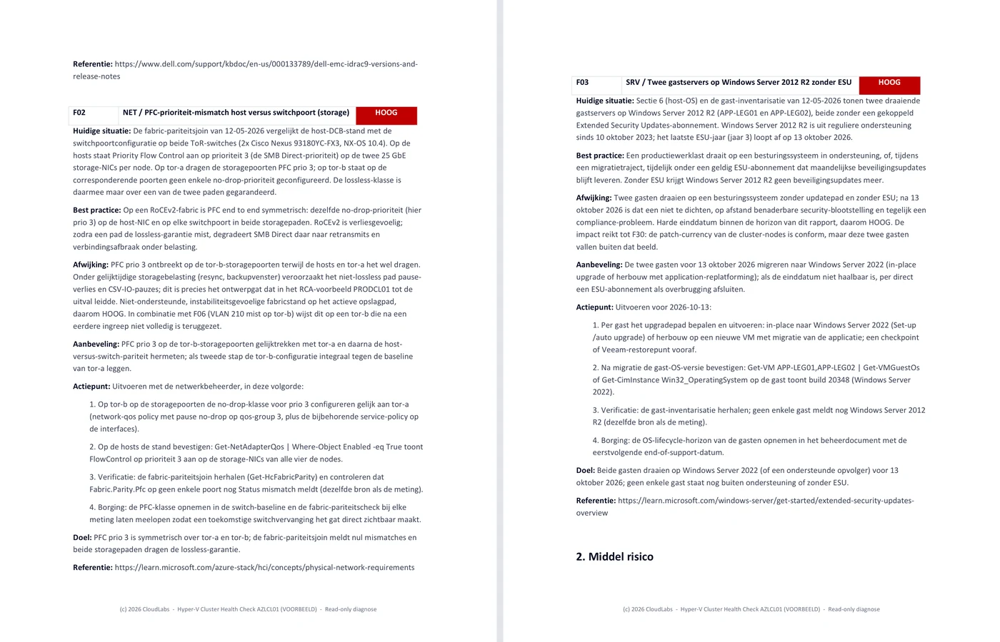
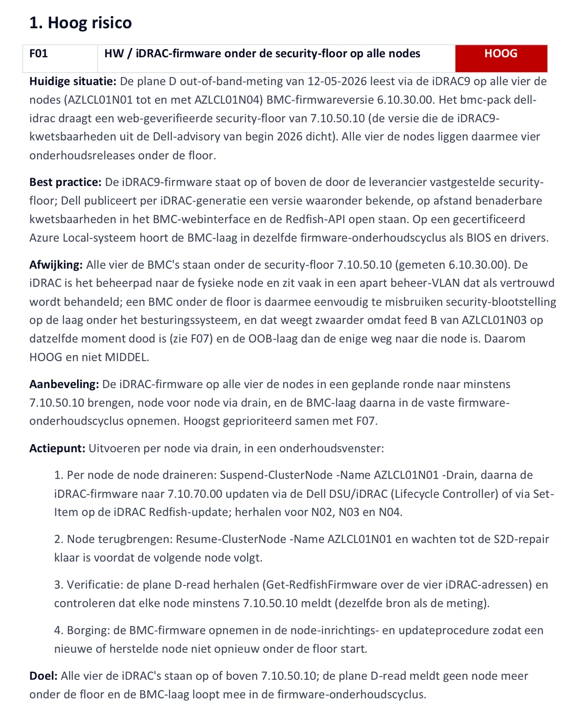

Windows Server en clusters
Windows Server tot en met 2025, failover clustering, Hyper-V, Cluster-Aware Updating, live migration-configuratie, tijdservice, patchactualiteit, OS-levenscyclus inclusief ESU-blootstelling.
Voor partners
Zoekt u een white label cluster assessment, of wilt u een cluster assessment voor uw klant laten uitvoeren onder uw eigen naam? Dat is waar deze pagina over gaat. Of u nu een specialist wilt inhuren voor één opdracht, een onderaannemer zoekt voor clusteronderzoek, of een cluster assessment voor uw klant wilt laten draaien: u krijgt een herhaalbare assessment-methodiek, met een meertalig rapport onder eigen merk.
Elke CloudLabs health check draait volgens hetzelfde patroon: een op maat gemaakt, read-only inventarisatiescript dat specifiek voor de klant is gebouwd, dat door de partner bij de klant wordt uitgevoerd en in de CloudLabs Studio wordt verwerkt tot documenten waar een klant concreet mee aan de slag kan. Die toolchain is inmiddels aan zijn tweede generatie toe en partners kunnen er hun opdrachten op draaien bij hun eigen klantenkring.
01 · Wat het is
De CloudLabs Health Check Toolchain v2 is een meetketen, geen monitoringproduct. Er wordt niets geïnstalleerd. Een PowerShell-script, tijdens een korte intake gebouwd voor de specifieke omgeving, draait één keer met read-only inloggegevens die de klant aanlevert. De resultaten gaan naar de CloudLabs Studio, waar elk gegeven wordt getoetst aan een up-to-date catalogus van ruim 150 afzonderlijke controles: Microsoft-baselines, security-floors van leveranciers, configuratieregels voor de fabric, bekende faalpatronen.
Eén ding doet de tooling nooit: conclusies trekken. Ze meet, vergelijkt en rangschikt; een specialist leest de bewijzen en schrijft de bevindingen. Elke bevinding vermeldt wat er is gemeten, hoe de gewenste situatie eruitziet, hoever de omgeving daarvan afwijkt, waarom het risiconiveau is wat het is en een concreet actieplan met verificatiestappen. Waar iets is gecontroleerd en in orde bevonden, vermeldt het rapport dat ook, zodat de klant precies kan zien wat er is nagekeken.

02 · Het engagement
Een engagement is geen losse meting maar een jaarcyclus rond een unieke clusterconfiguratie. Tien clusters bij een klant zijn tien engagements.
Wat een engagement omvat:
De aanbevolen cadans is een basismeting aan het begin van het engagement en daarna een vervolgmeting per kwartaal. Engagements uit een bundel zijn vrij inzetbaar over uw gehele klantenportefeuille; u bepaalt zelf bij welke klant en op welk moment u ze start.
Een nieuw engagement is nodig, in overleg, wanneer de omgeving materieel is gewijzigd: andere hardware, andere adressering of een gewijzigde inzet van het cluster. In dat geval is er een nieuwe basismeting nodig; een vervolgmeting kan niet vergelijken met een omgeving die niet meer bestaat.
Wat v2 meet
De eerste generatie dekte Windows Server, failover clustering en Hyper-V. Versie 2 breidt het bereik uit naar vrijwel de volledige moderne datacenterstack.
De basismeting dekt alles wat vanaf de clusternodes zelf te meten is, in een enkele sessie, zonder extra account, extra netwerkroute of aanlevering door een derde partij. Dit is het deel waar de klant het minste voor hoeft te regelen en waar de meeste bevindingen uit komen. Alles daarbuiten vraagt om een eigen collector, een aparte autorisatie of een route naar een ander netwerk: dat zijn de modules.
Windows Server tot en met 2025, failover clustering, Hyper-V, Cluster-Aware Updating, live migration-configuratie, tijdservice, patchactualiteit, OS-levenscyclus inclusief ESU-blootstelling.
Azure Local, HCI en Storage Spaces Direct: gezondheid van pool en virtuele schijven, Network ATC-intents, Arc-connectiviteit, secured-core-status, failovermarge. Azure Migrate waar relevant.
Dell, HPE en Lenovo, out-of-band gemeten via de BMC: firmware tegen geverifieerde security-floors, redundantie van voedingen, hardware-eventlogs, uniformiteit tussen de nodes.
Arrays van Pure Storage, HPE, Dell en Lenovo, read-only. Symmetrie tussen host en array: komt wat de array aanbiedt overeen met wat de hosts daadwerkelijk zien.
Ethernet-switches op diverse netwerkbesturingssystemen, met pariteitscontroles tussen host en switch: PFC-klassen, VLAN-trunks, de plekken waar lossless RDMA ongemerkt ophoudt lossless te zijn. Fibre Channel-HBA's en -fabrics als eigen module: zoning, poortstatus en padredundantie, plus de poorttellers die een falende kabel of SFP laten zien voordat er een pad uitvalt.
VMM, Windows Admin Center inclusief WAC Virtualization Mode, Veeam en Commvault kunnen allemaal in de meting worden meegenomen.
Hardware of software die uw klant gebruikt en die hier niet staat? Extra modules zijn meestal op korte termijn toe te voegen.
De modules
Welke modules van toepassing zijn, volgt uit de intake. U hoeft dus niet vooraf te weten wat u nodig heeft: wij leiden het af en leggen het u voor voordat er iets wordt gemeten. Een module die niet wordt afgenomen of niet wordt aangeleverd, wordt niet gemeten en komt als expliciete beperking in de rapportage te staan.
CloudLabs logt zelf nergens op in. Elke module wordt uitgelezen aan de kant die de laag beheert: de netwerk-, storage- of backupbeheerder draait het uitleesscript voor zijn eigen apparatuur, of vult de checklist in en CloudLabs werkt met wat daaruit terugkomt. Dat geldt voor alle elf, dus de beschrijvingen hieronder zeggen wat een module meet en niet wie de meting doet.
M1Ethernet-switches
De switchconfiguratie naast wat de hosts verwachten: VLAN’s, MTU, QoS en prioriteitsklassen, poortmodus en uplinkopbouw. Dit is de module die klassieke mismatches aantoont die vanaf de host alleen als symptoom zichtbaar zijn, zoals een MTU of prioriteitsklasse die aan de switchzijde niet doorloopt en RDMA stilletjes laat terugvallen.
M2Fibre Channel-switches
Zoning, fabricopbouw, poortstatus en padredundantie, alleen relevant waar de hosts hun opslag over Fibre Channel bereiken. Levert de bevestiging dat elk pad daadwerkelijk gescheiden loopt en dat de zoning aansluit op de hostmappings van het array.
M3Storage array
Inventarisatie van het array zelf: firmware en controllers, pools en LUN’s, hostmappings en padopbouw, getoetst tegen wat de hosts aan hun kant zien. Standaard worden ook de healthlogs en een momentopname van de prestatietellers meegelezen.
M4Out-of-band BMC (Redfish)
Hardwarestatus, firmware- en BIOS-niveau en instellingen die het besturingssysteem niet laat zien, uitgelezen via iDRAC, iLO of XClarity. Ook bruikbaar bij een node die op dat moment niet meedraait. Het enige dat de klant regelt is een route naar het BMC-netwerk vanaf de host waar het script draait.
M5Azure control plane (ARM)
De configuratie aan de Azure-kant: resources, netwerken, policies, rollen en registratiestatus. De klant draait zelf een read-only collector-script met het eigen Azure-account, dus er wordt ook hier geen identiteit voor CloudLabs ingericht.
M6Azure Migrate
De assessmentgegevens rond migratiegereedheid, gelezen in dezelfde sessie en met dezelfde autorisatie als M5. Levert de gereedheidsbeoordeling per VM naast wat er werkelijk op het cluster draait, inclusief de verschillen tussen die twee beelden.
M7Prestatieanalyse keten
De module die verbanden zichtbaar maakt. Over een afgesproken meetvenster worden drie lagen op een gemeenschappelijke tijdlijn gelegd: de tellers vanuit het besturingssysteem, de switchtellers en de arraytellers. Daarmee wordt aantoonbaar wat losse metingen alleen suggereren. Alleen zinvol in combinatie: M3 plus M1 of M2, over een meetvenster van minimaal vierentwintig uur waarin alle drie de lagen tegelijk meten.
M8Dataprotectie en beheerlagen
De inhoudelijke beoordeling van VMM, Windows Admin Center, Veeam en Commvault, voorbij de aanwezigheidscontrole uit de basismeting. Dekt de backupjob daadwerkelijk elke VM die op het cluster draait, worden herstelpunten geverifieerd, sluit de retentie aan op het beleid.
M9Systeemdocumentatie
De volledige inrichting van de omgeving vastgelegd als zelfstandig document: nodes en rollen, cluster- en netwerkopbouw, volumes en opslagpaden, firmware-baseline en de relevante configuratie-instellingen. Opgebouwd uit de meetgegevens, dus zonder aanvullende aanlevering door de klant.
M10Interviewbevindingen
Een gestructureerd gesprek met de beheerders over wat geen enkele meting kan laten zien: herstel bij uitval van een node, een locatie of het hele cluster; de actualiteit en vindbaarheid van de documentatie; de spreiding van kennis en de geregelde overdracht; en het onderhoudsritme. Een herstelprocedure die twee jaar geleden is geschreven en nooit is beproefd, telt als afwezig.
M11Maatwerkmodule op aanvraag
De toolchain dekt niet elke laag die u bij een klant tegenkomt. Waar een module ontbreekt, kan CloudLabs er een bouwen: eerst de scope en een offerte met een plafond, daarna gebouwd en beproefd in het eerste engagement waarin hij draait.
De documenten
Een opdracht levert vier documenttypes op, met een vijfde op afroep. Elke pagina hieronder is echte output uit de voorbeeldopdracht, klik om op volledige grootte te bekijken.
DOC 01
De eerste meting. Volledige bevindingen met risicoanalyse: managementsamenvatting, een bevindingen-tabel met de gradaties KRITIEK, HOOG, MIDDEL en LAAG, een register van wat is gecontroleerd en in orde bevonden en geprioriteerde aanbevelingen. De overzichtstabel geeft het management het hele beeld op één pagina; de hoofdstukken erachter geven de engineers de details. Bevindingen verwijzen naar elkaar waar risico's op elkaar inwerken: een uitgevallen voeding op een node verzwaart een firmware-bevinding op diezelfde node en het rapport vermeldt dat. Het register scheidt bovendien niet gemeten van in orde, zodat een schone sectie een bewering is die door bewijs wordt gedekt, nooit een aanname.

DOC 02
Na elke vervolgmeting: wat is opgelost, wat is blijven staan, wat is nieuw. Opgeloste bevindingen worden geverifieerd door meting, niet door ticketstatus; een bevinding wordt pas groen wanneer de vervolgmeting de oplossing aantoont. Dit is het document dat u tussen de metingen door aan tafel houdt. Het register houdt de volledige geschiedenis per bevinding bij: wanneer die voor het eerst is gezien, wat er tussentijds is veranderd en welke meting heeft aangetoond dat die is opgelost. Nieuwe bevindingen die tussen twee metingen opduiken, zoals een openstaande herstart die een patchronde heeft achtergelaten, komen in hetzelfde register terecht met hun eigen spoor.

DOC 03
De openstaande risico's die nog aandacht vragen, met een risico-trend grafiek die het verloop over de metingen laat zien. Het linkerpaneel toont de verdeling per meting, het rechterpaneel de trend per risiconiveau: in de voorbeeldopdracht daalt HOOG over drie metingen van 3 via 1 naar 0, terwijl het aantal opgeloste bevindingen oploopt tot 12. Elke bevinding op die groene lijn is geverifieerd door meting, niet door gerapporteerde status. Tastbaar bewijs van verricht werk, in een vorm die een klant kan voorleggen aan het management, een auditor of een cyberverzekeraar.

DOC 04
Actuele systeemdocumentatie, gegenereerd uit de laatste meting: identiteit, hardware, storage, netwerk, cluster, virtuele machines, beheer en back-up, tot en met firmwareniveaus en VLAN-tabellen. Altijd in overeenstemming met de werkelijkheid, omdat ze uit de werkelijkheid is afgeleid. Ze komt in twee niveaus: Basic dekt host en OS, Complete voegt de hoofdstukken voor array, fabric en fysieke intake toe. Omdat ze bij elke meting opnieuw wordt gegenereerd, verdwijnt documentatiedrift: een vervangen switch, een extra VLAN of een nieuwe node verschijnt gewoon in de volgende versie.

DOC 05
Na een crash of ernstig incident: een standaardmeting plus een read-only incidentoogst, samengebracht in een tijdlijn over alle nodes heen. De analyse benoemt de meest waarschijnlijke oorzaak, toont de alternatieven die zijn afgewogen en verworpen en vermeldt de eigen hiaten in het bewijs. RCA's worden met prioriteit behandeld: dezelfde dag of de eerstvolgende werkdag. De clusterlog wordt alleen met uitdrukkelijke toestemming verzameld en de detectoren rangschikken hypothesen, ze concluderen nooit: de geschreven analyse is opgesteld door een specialist, zoals elk document in deze keten. Waar bewijs ontbreekt, vermeldt het rapport dat, in plaats van het toe te dekken.

Alle rapportage wordt in het Nederlands, Engels, Duits, Spaans of Frans opgeleverd. De taal wordt bij de intake vastgelegd en geldt voor het hele engagement. Oplevering vindt plaats in de standaardopmaak van CloudLabs, in een bewerkbaar formaat. Wilt u het rapport in uw eigen huisstijl of die van de klant overhandigen, dan past u die opmaak zelf toe. Wij leveren de inhoud, u bepaalt de vorm.
Het oplossen van de bevindingen doet u zelf, bij uw eigen klant en op uw eigen voorwaarden. CloudLabs blijft daarbij op de achtergrond beschikbaar voor technische ondersteuning, remote of op locatie. Die uren vallen buiten het engagement en worden op nacalculatie afgerekend.
Hoe een opdracht verloopt
01 · Intake
Een korte sessie om de scope en de bijzonderheden van de omgeving vast te leggen. Het resultaat is een inventarisatiescript dat precies voor die configuratie is gebouwd.
02 · Aanlevering
Per module krijgt de betreffende beheerder een eigen instructiekaart met de checklist of het commando dat aan zijn kant gedraaid wordt. Leveranciersgegevens, endpoints en switchnamen worden daar uitgevraagd, bij de beheerder die het antwoord heeft.
03 · Meting
U draait het script zelfstandig bij uw klant. Het voert read-only commando's uit met een account dat de klant aanlevert. Voor switches, storage arrays en Azure ARM kunnen aanvullende read-only accounts nodig zijn.
04 · Verwerking en oplevering
De resultaatbestanden gaan de CloudLabs Studio in en komen terug als afgeronde documenten, normaal gesproken binnen drie tot vijf werkdagen. De verwerking gebeurt op een gehoste server in Nederland; de data blijft binnen de Nederlandse jurisdictie.
05 · Bespreking en vervolgmetingen
U en CloudLabs presenteren het rapport samen aan de klant. De bevindingen worden vervolgens door de klant en u afgewerkt, met CloudLabs op afroep voor de specialistische delen. Binnen de twaalf maanden van het engagement volgen drie vervolgmetingen, bij voorkeur per kwartaal; de toolchain blijft het bewijs van voortgang leveren.
Uw klant blijft uw klant. Wij benaderen uw klant nooit zonder u, tenzij u daar uitdrukkelijk om vraagt. De expertise van CloudLabs staat gedurende de hele opdracht tot uw beschikking en die van de klant.
Een uitgewerkt voorbeeld
Noorderlicht B.V. is geen echte klant. Het is een fictieve omgeving, speciaal gebouwd zodat de output van de toolchain getoond kan worden zonder iemands productiedata prijs te geven. De documenten zelf zijn echt: dezelfde pipeline, dezelfde huisstijl, dezelfde regels als bij een betaalde opdracht. Hieronder staat één bevinding uit het Bevindingen-rapport, volledig uitgewerkt. Dit is het detailniveau dat elke bevinding meedraagt: de gemeten situatie met versies en datums, de best practice met de bron ervan, de afwijking en waarom die dit risiconiveau krijgt en een actieplan dat een engineer kan uitvoeren, inclusief de verificatie die het geheel afrondt.

Een Azure Local-cluster met vier nodes: all-flash S2D, 25 GbE RoCE-storagenetwerk, out-of-band hardwaremeting, switch fabric en interviewbewijs inbegrepen. Basismeting in mei 2026: 33 bevindingen, waarvan 1 KRITIEK, 3 HOOG, 11 MIDDEL en 6 LAAG en 12 punten gecontroleerd en in orde bevonden.
Een S2D-cluster met zes nodes verloor op een zaterdagmiddag een CSV; 14 VM's herstartten. De RCA reconstrueerde de keten uit eventbewijs over alle nodes heen: twee dagen eerder was een switch vervangen en de lossless storageconfiguratie ervan was nooit hersteld. Onder de gecombineerde back-up- en herstelbelasting liep storage-I/O in een time-out en werd een node uit het cluster verwijderd.
Waar partners het inzetten
Een nulmeting en eindmeting rond het project bewijzen objectief dat de nieuwe omgeving volgens best practice is opgeleverd.
Voordat de nieuwe clusters in productie gaan: zijn alle best practices toegepast en wat moet er eerst nog gebeuren.
Weet precies wat u in beheer neemt, met actuele as-built-documentatie en vanaf dag één een helder beeld van de openstaande risico's.
De health check als terugkerende dienst, met de risico-trend grafiek als tastbaar bewijs van geleverde kwaliteit.
Herhaalbare, op bewijs gebaseerde metingen die standhouden richting NIS2, ISO 27001 en cyberverzekeraars.
Fusies, overnames, of het overnemen van een klant van een andere leverancier: een snel, objectief beeld van de staat van de infrastructuur.
Afspraken
De tarieven en de codering voor intake en facturatie zijn op aanvraag beschikbaar, samen met de toelichting op hoe de collector met inloggegevens omgaat. Vraag ze op bij de partnerbriefing hieronder.
Interesse?
Neem contact op voor de partnerbriefing: de volledige Noorderlicht-voorbeeldset, een toelichting op het proces en de commerciële voorwaarden, inclusief wat het u oplevert.